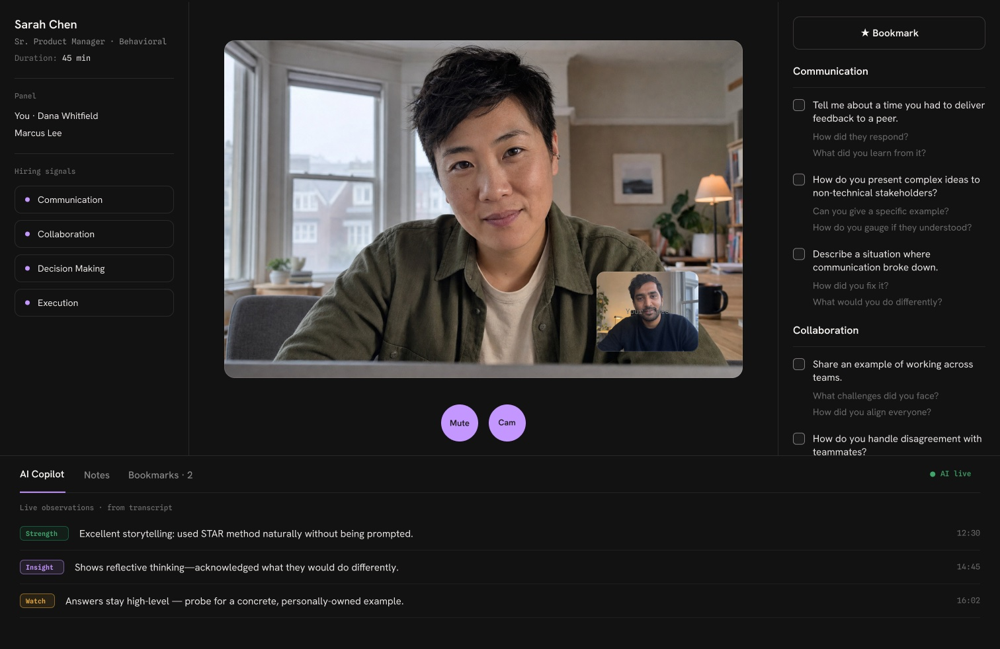
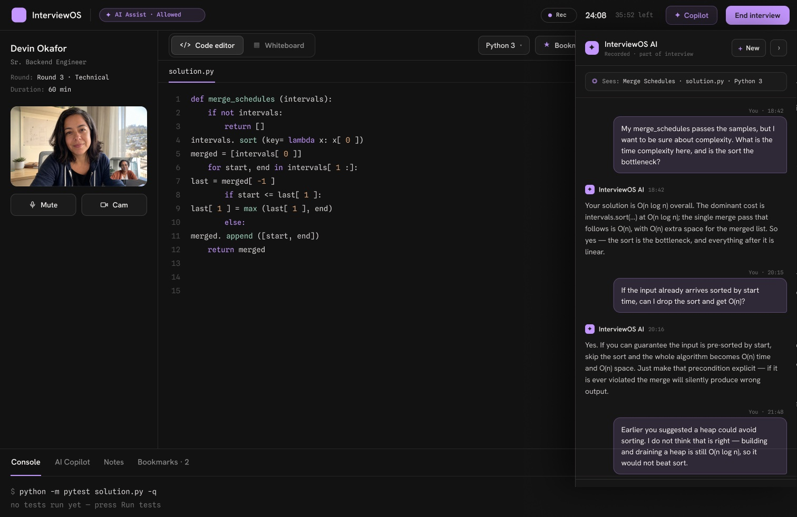
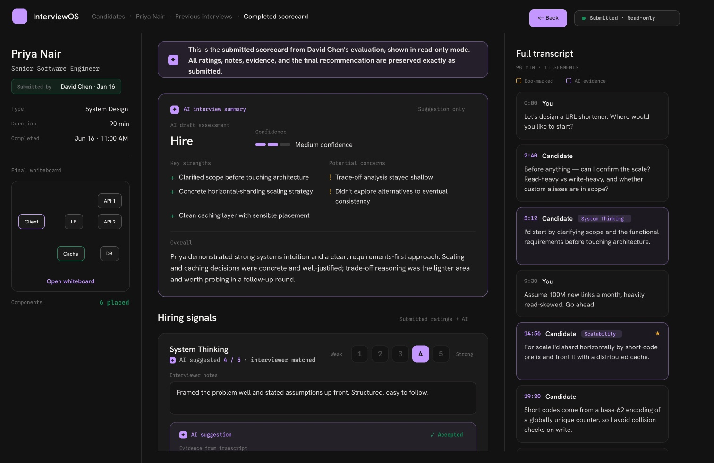
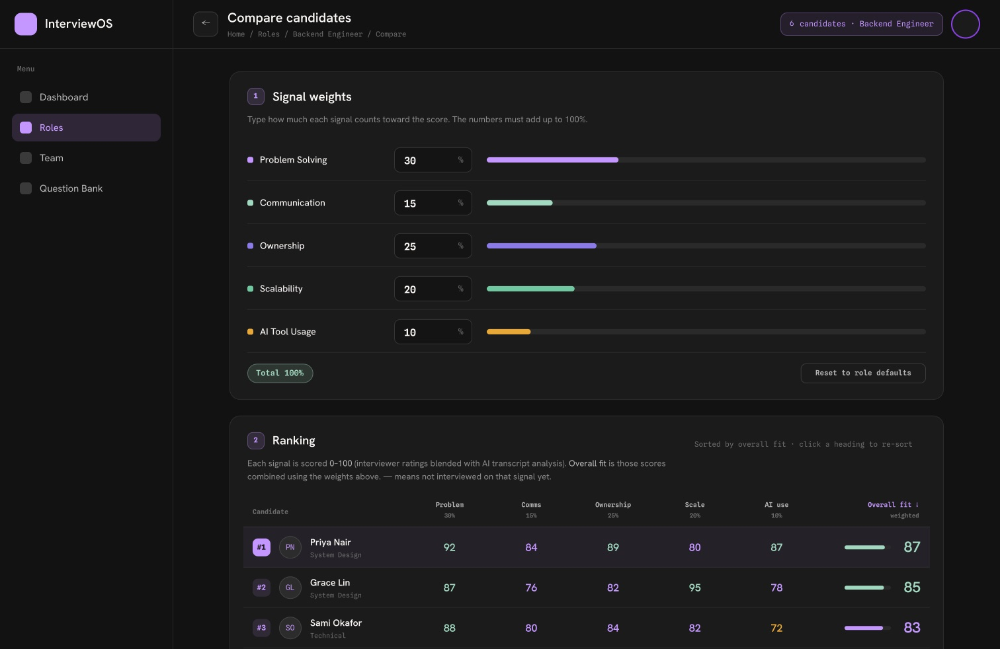

Decision quality
Did they weigh trade-offs, or just describe what they did.
✦ai score
4/5
"We picked sharding over a bigger box because reads were 100:1."
InterviewOS turns raw interviewer notes into rubric-scored, evidence-backed candidate ratings. Every score traces back to a quote, not a gut feeling.

9 hiring signals
Behavioral signals most scorecards miss entirely — each one scored against the transcript.
✦Scores are drafted by AI from the transcript — the interviewer confirms or overrides every one.
"We picked sharding over a bigger box because reads were 100:1."
"If writes spike, that plan breaks — let me redo the estimate."
"I made the call to cut the feature and told the team why."
"I haven't run Kafka in prod — here's how I'd de-risk it."
"A 200ms redirect costs us conversions, so p99 was the target."
"Two engineers, six weeks — so we shipped the boring version."
3 accounts of the same project · no contradictions flagged
"Nobody asked, but the retry logic was silently dropping jobs."
"Think of the cache as a receipt drawer for hot links."
The evidence extraction engine
The evidence extraction engine maps raw interviewer notes to your rubric automatically, with a confidence score on every match.
Stop asking interviewers to remember and summarize. InterviewOS's pipeline reads notes and transcripts, matches statements to rubric criteria, and shows exactly which quote supports which score.
Live interview intelligence
Real-time transcription feeds live follow-up probes, so interviewers push for depth instead of settling for a surface answer. Make the most of your interview with higher-signal questions.

Technical round — AI copilot answers complexity questions live, right beside the code
For coding and technical rounds, InterviewOS lets candidates use AI assistance, and monitors exactly what they ask and how they use it. See how a candidate collaborates with AI, not just whether they can code without it.

Completed scorecard — every signal rating traces back to a transcript quote
Fits your existing process
Import roles straight from your ATS and run every round off questions your team already trusts. Fits in seamlessly with your existing hiring workflows for a low friction adoption.
Compare candidates side by side
Rank every candidate for a role on the same signals, weighted the way your team actually hires — then sort by fit and see exactly where each one separates from the pack.
Adjust signal weights per role and the ranking recalculates instantly. No spreadsheet exports, no re-scoring by hand.

Signal-weighted ranking — set the weights once, every candidate re-sorts against them
See how InterviewOS scores your next interview.